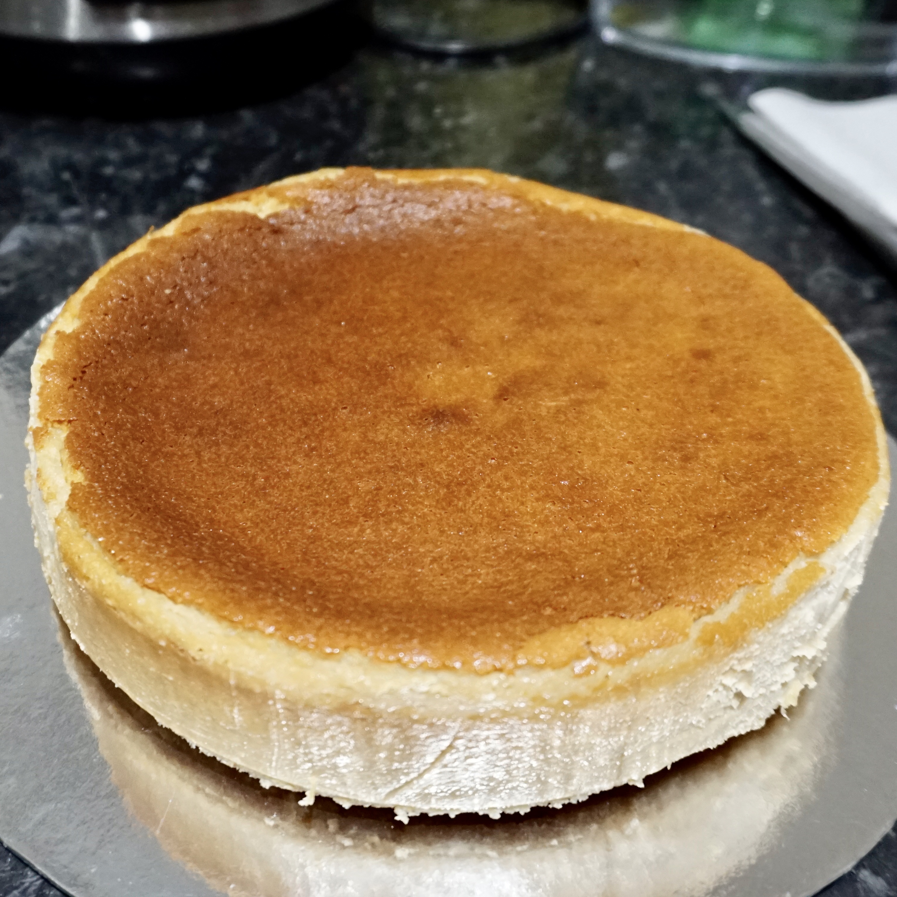

HOME ABOUT BLOG PORTFOLIO CONTACT

It was my boyfriend's birthday recently and, instead of baking a regular birthday cake, I decided that it would be a touch more special to try making a dairy free baked cheesecake instead!
It's absolutely heavenly; rich, creamy, and genuinely one of the best cheesecakes I've ever eaten in my life, despite having no real cheese in it! Unfortunately for those of you with nut allergies, this is not the recipe for you. In future I will try to make another iteration of the recipe that does not include cashews.
Ingredients:
For the crust:
— 4 tbsp melted vegan butter
— 150g digestive biscuit crumbs
(~10 digestive biscuits)
For the filling:
— 150g/1 cup cashews, soaked in warm water for at least 8 hours
— 300g/1 cup coconut cream
— 230g dairy free cream cheese
— ⅔ cup maple syrup
— 1 tbsp cornstarch
— 1 tsp vanilla extract
— 2 tsp lemon zest
— 2 tbsp lemon juice
— a pinch of salt
Method:
1. Line a 20cm cake tin with parchment paper. I cut out a circle of parchment paper for the base, and just greased the sides with vegan butter.
2. Mix together the biscuit crumbs and melted butter until well combined before placing into the cake tin and pressing down with a spatula until evenly distributed. Refridgerate while preparing the filling.
3. Blend the cashews with the maple syrup until very smooth. Add to a large mixing bowl with all of the other ingredients, mixing until there are absolutely no lumps. Alternatively, if you have a large enough blender, feel free to blend all of the ingredients together.
4. Pour the filling on top of the base and tap firmly on the worktop to remove any large bubbles.
5. Bake at 180°C in the middle of the oven for between 1 hour and 1 hour 30. The top should be medium brown, the edges should be firm, and the middle should be just slightly jiggly.
6. Switch off the oven and cool the cheesecake in the oven for 1 hour, before leaving to cool at room temperature for an additional 1 hour. This is to avoid cracking.
7. Once cooled to room temperature, chill in the fridge until ready to serve.
8. Enjoy! Feel free to serve with whatever topping you like; from lemon curd to raspberry jam!